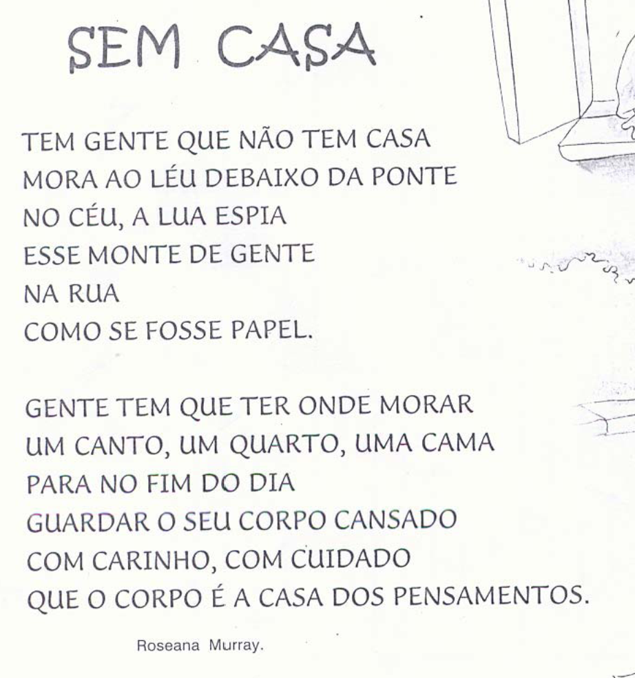

Atividade Escrita
1. Depois de ler o texto, dê o significado da expressão “mora ao léu”.
2. Releia os versos:
“No céu a lua espia
esse monte de gente
na rua
como se fosse de papel.”
Escreva com suas palavras o significado da expressão “monte de gente...como se fosse papel.”
4. Compare o texto do poema com o da reportagem que você estudou no roteiro
a) O que há em comum entre eles?
b) Em que aspecto eles se diferenciam?
5. É possível encontrar no poema respostas para as perguntas: QUEM?, ONDE?, QUANDO?, O QUÊ? Explique.